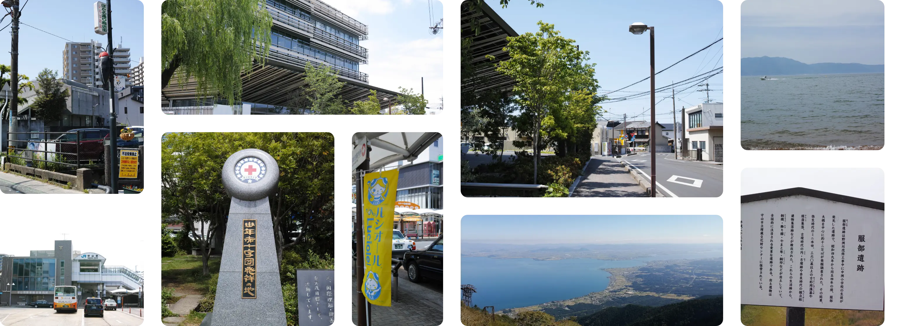

歴史と共に感じる 水の都守山
家族とお出かけする、毎日の散歩コースにする、 いろんな思いで巡るのにぴったりな守山の歴史観光ガイドです
About Moriyama City
守山市ってどんな街？
-
自然が溢れる街
琵琶湖、野洲川、三上山…etc 様々な自然に囲まれた守山市。
ちょっと歩けば自然に会えるそんな街です。 -
自然が溢れる街
琵琶湖や、豊富な川によって、綺麗な水が豊富に流れている守山市。
-
自然が溢れる街
市内の各地に弥生時代から江戸時代まで、幅広い時代の歴史を感じる場所が数多く点在。